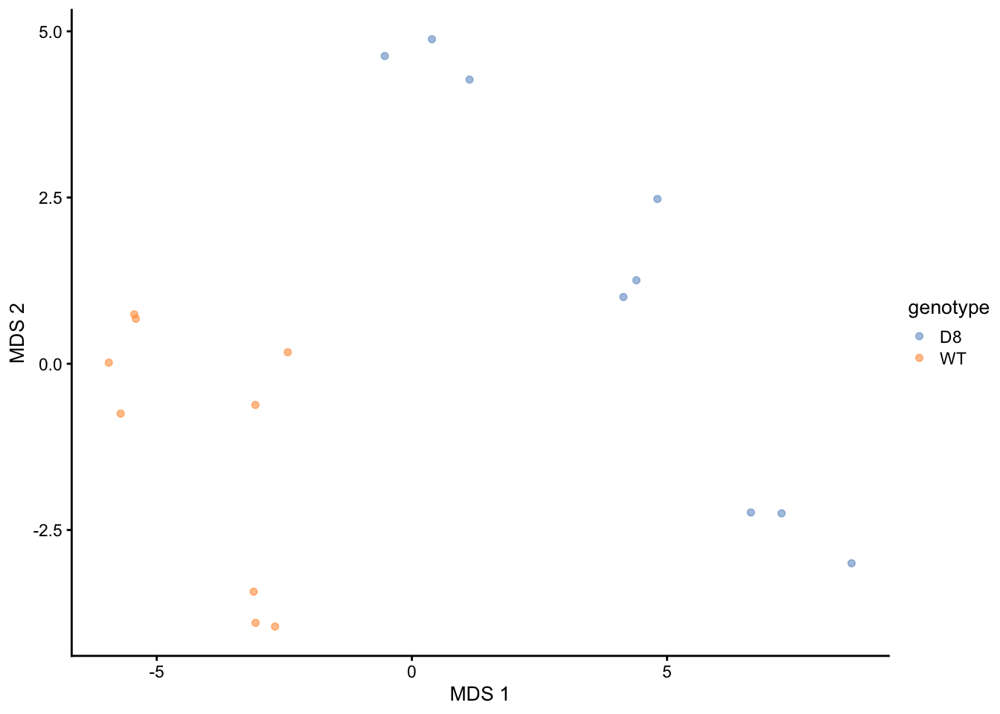
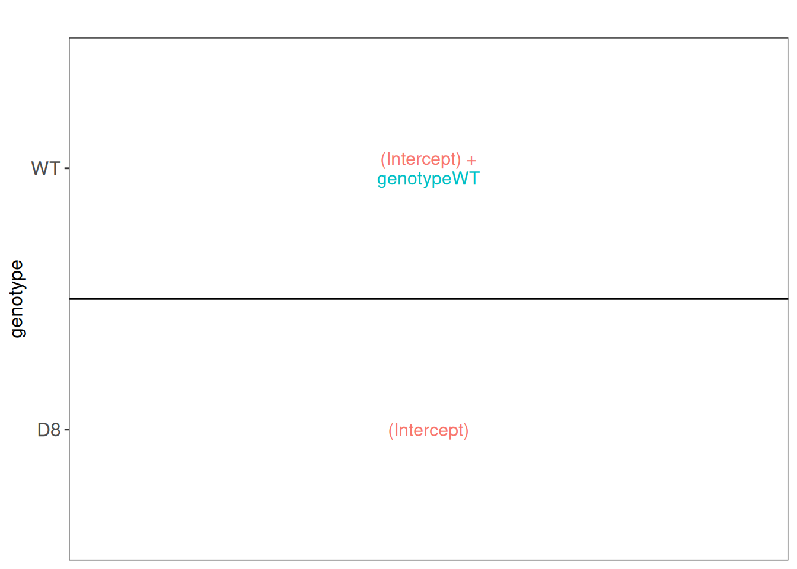
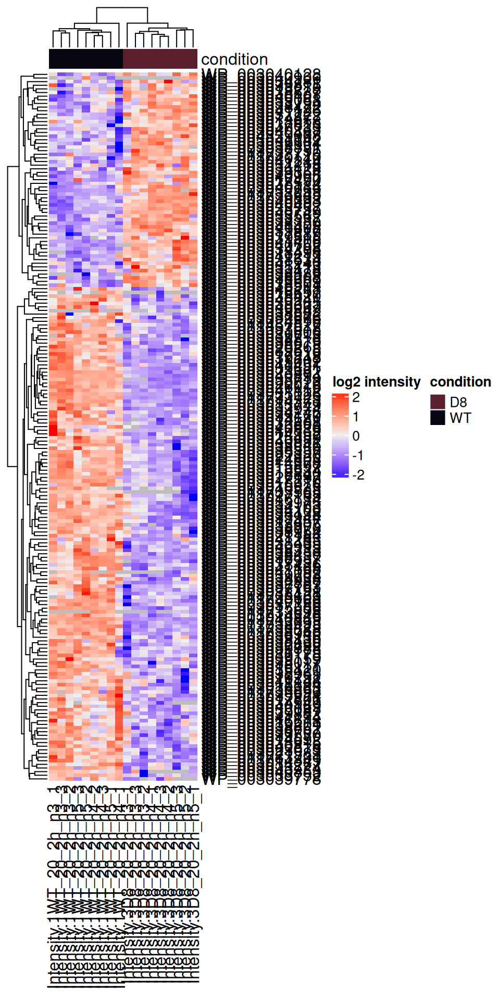
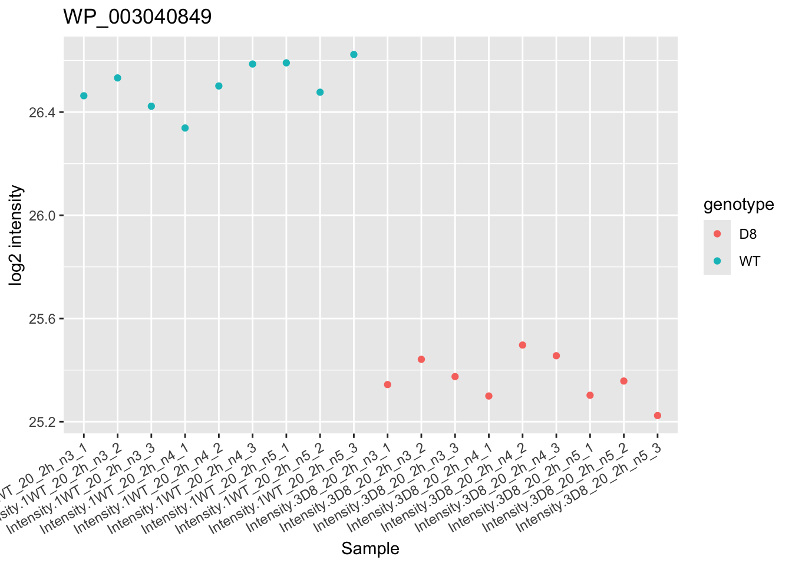

library("msqrob2")
library("ggplot2")
library("ggrepel")
library("dplyr")5 The francisella use case: a MaxQuant LFQ DDA dataset with technical replication
5.1 Introduction
In this chapter we show how to analyse LFQ data with technical replication. In the data analysis we have to acknowledge pseudo-replication, i.e. data for multiple technical replicates from the same biological repeat are correlated and we cannot treat these as independent repeats.
We will build upon the mixed model framework in msqrob2 to address this correlation by introducing a random effect for each biological repeat.
If you never used msqrob2, we suggest to familiarise yourself with the concepts chapter first.
5.2 Load packages
First, we load the msqrob2 package and additional packages for data manipulation and visualisation.
We also configure the parallelisation framework.
library("BiocParallel")
register(SerialParam())5.3 Load data
5.3.1 Experimental context
A study on the facultative pathogen Francisella tularensis was conceived by (Ramond et al. 2015). F. tularensis enters the cells of its host by phagocytosis. The authors showed that F. tularensis is arginine deficient and imports arginine from the host cell via an arginine transporter, ArgP, in order to efficiently escape from the phagosome and reach the cytosolic compartment, where it can actively multiply. In their study, they compared the proteome of wild type F. tularensis (WT) to ArgP-gene deleted F. tularensis (knock-out, D8). For this exercise, we use a subset of the F. tularensis dataset where bacterial cultures were grown in biological triplicate and each biorep was run in technical triplicate on a nanoRSLC-Q Exactive PLUS instrument.
5.3.2 Getting the data
The data were searched with MaxQuant version 1.4.1.2. and are available on the PRIDE repository: PXD001584. We download the peptides file1.
TODO put on Zenodo and use BiocFileCache
library("BiocFileCache")
bfc <- BiocFileCache()
pepFile <- bfcrpath(bfc, "https://raw.githubusercontent.com/statOmics/MSqRobSumPaper/master/Francisella/data/maxquant/peptides.txt")After downloading the files, we can load the peptide table. Contrarily a PSM table, the peptide table is provided in a “wide format”, meaning that each row represents a single peptide and that each quantification column (that starts with "Intensity") represents a single sample.
peps <- read.delim(pepFile)
quantcols <- grep("Intensity\\.", names(peps), value = TRUE)| Sequence | Amino.acid.before | First.amino.acid | Second.amino.acid | Second.last.amino.acid | Last.amino.acid | Amino.acid.after | A.Count | R.Count | N.Count | D.Count | C.Count | Q.Count | E.Count | G.Count | H.Count | I.Count | L.Count | K.Count | M.Count | F.Count | P.Count | S.Count | T.Count | W.Count | Y.Count | V.Count | U.Count | Length | Missed.cleavages | Mass | Proteins | GI.number | Leading.razor.protein | Protein.names | Unique..Groups. | Unique..Proteins. | Charges | PEP | Score | Experiment.1WT_20_2h_n3_1 | Experiment.1WT_20_2h_n3_2 | Experiment.1WT_20_2h_n3_3 | Experiment.1WT_20_2h_n4_1 | Experiment.1WT_20_2h_n4_2 | Experiment.1WT_20_2h_n4_3 | Experiment.1WT_20_2h_n5_1 | Experiment.1WT_20_2h_n5_2 | Experiment.1WT_20_2h_n5_3 | Experiment.3D8_20_2h_n3_1 | Experiment.3D8_20_2h_n3_2 | Experiment.3D8_20_2h_n3_3 | Experiment.3D8_20_2h_n4_1 | Experiment.3D8_20_2h_n4_2 | Experiment.3D8_20_2h_n4_3 | Experiment.3D8_20_2h_n5_1 | Experiment.3D8_20_2h_n5_2 | Experiment.3D8_20_2h_n5_3 | Intensity | Intensity.1WT_20_2h_n3_1 | Intensity.1WT_20_2h_n3_2 | Intensity.1WT_20_2h_n3_3 | Intensity.1WT_20_2h_n4_1 | Intensity.1WT_20_2h_n4_2 | Intensity.1WT_20_2h_n4_3 | Intensity.1WT_20_2h_n5_1 | Intensity.1WT_20_2h_n5_2 | Intensity.1WT_20_2h_n5_3 | Intensity.3D8_20_2h_n3_1 | Intensity.3D8_20_2h_n3_2 | Intensity.3D8_20_2h_n3_3 | Intensity.3D8_20_2h_n4_1 | Intensity.3D8_20_2h_n4_2 | Intensity.3D8_20_2h_n4_3 | Intensity.3D8_20_2h_n5_1 | Intensity.3D8_20_2h_n5_2 | Intensity.3D8_20_2h_n5_3 | Reverse | Contaminant | id | Protein.group.IDs | Mod..peptide.IDs | Evidence.IDs | MS.MS.IDs | Best.MS.MS | Oxidation..M..site.IDs |
|---|---|---|---|---|---|---|---|---|---|---|---|---|---|---|---|---|---|---|---|---|---|---|---|---|---|---|---|---|---|---|---|---|---|---|---|---|---|---|---|---|---|---|---|---|---|---|---|---|---|---|---|---|---|---|---|---|---|---|---|---|---|---|---|---|---|---|---|---|---|---|---|---|---|---|---|---|---|---|---|---|---|---|---|---|---|
| AAAEELDTR | K | A | A | T | R | K | 3 | 1 | 0 | 1 | 0 | 0 | 2 | 0 | 0 | 0 | 1 | 0 | 0 | 0 | 0 | 0 | 1 | 0 | 0 | 0 | 0 | 9 | 0 | 974.4669 | WP_003038655 | gi|118497196 | gi|118497196 | hypothetical protein [Francisella tularensis] | yes | yes | 1,2 | 0.0001253 | 59.35 | NA | NA | 1 | 1 | NA | 1 | NA | 1 | NA | NA | 1 | NA | NA | NA | NA | NA | NA | NA | 1.3295e+09 | 0 | 0 | 9290400 | 92996000 | 0 | 98059000 | 0 | 80803000 | 0 | 0 | 95433000 | 0 | 0 | 0 | 0 | 0 | 0 | 0 | 0 | 419 | 0 | 0;1;2;3;4;5;6;7;8;9;10;11;12;13;14;15;16;17;18 | 0;1;2;3;4;5;6;7;8;9;10;11;12;13;14;15;16;17;18 | 15 | |||
| AAAGFVITASHNK | R | A | A | N | K | F | 4 | 0 | 1 | 0 | 0 | 0 | 0 | 1 | 1 | 1 | 0 | 1 | 0 | 1 | 0 | 1 | 1 | 0 | 0 | 1 | 0 | 13 | 0 | 1285.6779 | WP_003041237 | gi|118498194 | gi|118498194 | phosphoglucosamine mutase [Francisella tularensis] | yes | yes | 2 | 0.0000530 | 45.825 | NA | 1 | NA | NA | NA | NA | NA | 1 | 1 | 1 | 1 | NA | 1 | 1 | 1 | 1 | NA | NA | 1.6719e+08 | 0 | 20679000 | 0 | 0 | 0 | 0 | 0 | 17358000 | 13841000 | 12278000 | 10712000 | 0 | 9500700 | 11111000 | 8723500 | 8125200 | 0 | 0 | 1 | 1150 | 1 | 19;20;21;22;23;24;25;26;27;28;29;30;31;32;33 | 19;20;21;22;23;24;25;26;27;28;29;30;31;32;33 | 26 | |||
| AAANEYELALAYSIEEVAPDLHK | K | A | A | H | K | Y | 6 | 0 | 1 | 1 | 0 | 0 | 4 | 0 | 1 | 1 | 3 | 1 | 0 | 0 | 1 | 1 | 0 | 0 | 2 | 1 | 0 | 23 | 0 | 2516.2435 | WP_003038915 | gi|118497331 | gi|118497331 | glycine–tRNA ligase subunit beta [Francisella tularensis] | yes | yes | 3 | 0.0000000 | 84.327 | 1 | 1 | 2 | 1 | 1 | 1 | 2 | 2 | 1 | 1 | 2 | 1 | 1 | 1 | 1 | NA | 1 | 1 | 5.5675e+08 | 28853000 | 28091000 | 30436000 | 19476000 | 22050000 | 20687000 | 36588000 | 28654000 | 7009100 | 14174000 | 8548000 | 7859200 | 14871000 | 11690000 | 4470500 | 0 | 4048100 | 3422300 | 2 | 513 | 2 | 34;35;36;37;38;39;40;41;42;43;44;45;46;47;48;49;50;51;52;53;54;55;56;57;58;59;60;61;62;63;64;65;66;67;68;69;70;71;72;73;74;75;76 | 34;35;36;37;38;39;40;41;42;43;44;45;46;47;48;49;50;51;52;53;54;55;56;57;58;59;60;61;62;63;64;65;66;67;68;69;70;71;72;73;74;75;76;77;78;79 | 39 | |||
| AAANNPQLEAFK | K | A | A | F | K | K | 4 | 0 | 2 | 0 | 0 | 1 | 1 | 0 | 0 | 0 | 1 | 1 | 0 | 1 | 1 | 0 | 0 | 0 | 0 | 0 | 0 | 12 | 0 | 1272.6463 | WP_003038264 | gi|118496879 | gi|118496879 | molecular chaperone HtpG [Francisella tularensis] | yes | yes | 2 | 0.0000000 | 108.56 | 1 | 1 | 1 | 1 | 1 | 1 | 1 | 1 | 1 | 1 | 1 | 1 | 1 | 1 | 1 | 1 | 1 | 1 | 1.4830e+10 | 339830000 | 420390000 | 393930000 | 235060000 | 381090000 | 360270000 | 255710000 | 311370000 | 271440000 | 225140000 | 289880000 | 282500000 | 209490000 | 223610000 | 219700000 | 169120000 | 178150000 | 170400000 | 3 | 199 | 3 | 77;78;79;80;81;82;83;84;85;86;87;88;89;90;91;92;93;94;95;96;97;98;99;100;101;102;103;104;105;106;107;108;109;110;111;112;113;114;115;116;117;118;119;120;121;122;123;124 | 80;81;82;83;84;85;86;87;88;89;90;91;92;93;94;95;96;97;98;99;100;101;102;103;104;105;106;107;108;109;110;111;112;113;114;115;116;117;118;119;120;121;122;123;124;125;126;127;128;129;130;131;132;133;134;135;136;137;138;139;140;141;142;143;144;145;146;147;148;149;150;151;152;153;154;155;156;157;158;159;160;161;162;163;164;165;166;167;168;169;170;171;172 | 159 | |||
| AAASAGLVDEK | K | A | A | E | K | A | 4 | 0 | 0 | 1 | 0 | 0 | 1 | 1 | 0 | 0 | 1 | 1 | 0 | 0 | 0 | 1 | 0 | 0 | 0 | 1 | 0 | 11 | 0 | 1030.5295 | WP_003035781 | gi|118497152 | gi|118497152 | delta-aminolevulinic acid dehydratase [Francisella tularensis] | yes | yes | 2 | 0.0000951 | 67.385 | 1 | NA | 1 | 1 | 1 | NA | 1 | 1 | 1 | 1 | 1 | 1 | 1 | 1 | NA | 1 | 1 | 1 | 4.8209e+09 | 240280000 | 0 | 241890000 | 222250000 | 189930000 | 0 | 160440000 | 147230000 | 143340000 | 135910000 | 185740000 | 168620000 | 160240000 | 158000000 | 0 | 92542000 | 102350000 | 100090000 | 4 | 388 | 4 | 125;126;127;128;129;130;131;132;133;134;135;136;137;138;139;140;141;142;143;144;145;146;147;148;149;150;151;152;153;154;155 | 173;174;175;176;177;178;179;180;181;182;183;184;185;186;187;188;189;190;191;192;193;194;195;196;197;198;199;200;201;202;203 | 191 | |||
| AAASLDLYSYPK | K | A | A | P | K | V | 3 | 0 | 0 | 1 | 0 | 0 | 0 | 0 | 0 | 0 | 2 | 1 | 0 | 0 | 1 | 2 | 0 | 0 | 2 | 0 | 0 | 12 | 0 | 1297.6554 | WP_003039212 | gi|118497492 | gi|118497492 | phosphorylase [Francisella tularensis] | yes | yes | 2 | 0.0125630 | 31.675 | NA | 1 | 1 | NA | 1 | 1 | NA | NA | NA | NA | NA | NA | NA | 1 | NA | NA | NA | NA | 1.3715e+08 | 0 | 31069000 | 31448000 | 0 | 27721000 | 28657000 | 0 | 0 | 0 | 0 | 0 | 0 | 0 | 18253000 | 0 | 0 | 0 | 0 | 5 | 624 | 5 | 156;157;158;159;160 | 204;205;206;207;208 | 205 |
We now extract the sample annotations. We will build a table where each row in the annotation table contains information for one sample (the table below shows the first 6 rows). This information is extracted from the sample names.
coldata <- data.frame(quantCols = quantcols) |>
filter(grepl("_20_", quantCols) & grepl("_n\\d", quantCols)) |>
mutate(genotype = substr(quantCols, 12, 13),
biorep = paste0(genotype, "_", substr(quantCols, 21, 22)),
run = 1:length(quantcols))| quantCols | genotype | biorep | run |
|---|---|---|---|
| Intensity.1WT_20_2h_n3_1 | WT | WT_n3 | 1 |
| Intensity.1WT_20_2h_n3_2 | WT | WT_n3 | 2 |
| Intensity.1WT_20_2h_n3_3 | WT | WT_n3 | 3 |
| Intensity.1WT_20_2h_n4_1 | WT | WT_n4 | 4 |
| Intensity.1WT_20_2h_n4_2 | WT | WT_n4 | 5 |
| Intensity.1WT_20_2h_n4_3 | WT | WT_n4 | 6 |
5.3.3 The QFeatures data class
We combine the two tables into a QFeatures object.
(pe <- readQFeatures(
peps, colData = coldata, fnames = "Sequence", name = "peptides"
))An instance of class QFeatures (type: bulk) with 1 set:
[1] peptides: SummarizedExperiment with 10693 rows and 18 columns We now have a QFeatures object with 1 set, containing r nrows(pe)[[1]] rows (peptides) and 18 columns (samples).
5.4 Data preprocessing
msqrob2 relies on the QFeatures data structure, meaning that we can directly make use of QFeatures’ data preprocessing functionality (see also the QFeatures documentation).
5.4.1 Encoding missing values
Peptides with zero intensities should be encoded using NA.
pe <- zeroIsNA(pe, "peptides")We calculate how many non zero intensities we have per peptide and this is often useful for filtering.
naResults <- nNA(pe, "peptides")
data.frame(naResults$nNArows) |>
ggplot() +
aes(x = nNA) +
geom_histogram()
5.4.2 Peptide filtering
We filter peptides based on 3 criteria (see [PSM filtering]).
- Remove failed protein inference
We remove peptides that could not be uniquely mapped to a protein.
pe <- filterFeatures(pe,
~ Proteins != "" & ## Remove failed protein inference
!grepl(";", Proteins)) ## Remove protein groups- Remove reverse sequences and contaminants
We now remove the contaminants and peptides that map to decoy sequences. These features bear no information of interest and will reduce the statistical power upon multiple test adjustment.
pe <- filterFeatures(pe, ~ Reverse != "+" & Contaminant != "+")- Drop peptides that were only identified in a single biorepeat
Note, that in experiments without technical repeats we filter on the number of samples in which a peptide is picked up (this is typically performed using filterNA()). Here, we will require that a peptide is picked up in at least two biorepeats. We compute the number of biorepeats that were observed for each peptide (that is the number of biorepeats that contain at least one observed value).
rowData(pe[["peptides"]])$nNonZeroBiorep <- apply(
assay(pe[["peptides"]]), 1, function(intensity)
pe$biorep[!is.na(intensity)] |>
unique() |>
length()
)We keep peptides that are observed in at least two biorepeats.
(pe <- filterFeatures(pe, ~ nNonZeroBiorep >= 2))An instance of class QFeatures (type: bulk) with 1 set:
[1] peptides: SummarizedExperiment with 7542 rows and 18 columns We keep 7542 peptides upon filtering.
5.4.3 Standard preprocessing workflow
We can now prepare the data for modelling. The workflow ensures the data complies to msqrob2’s requirements:
- Intensities are log-transformed.
pe <- logTransform(pe, base = 2, i = "peptides", name = "peptides_log")- Normalisation with the Median of Ratios method.
pseudoRef <- assay(pe[["peptides_log"]]) |>
rowMeans(na.rm = TRUE) #1. Calculate the row means
nfLog <- sweep(
assay(pe[["peptides_log"]]),
MARGIN = 1,
pseudoRef) |> #2. Subtract the row means row-by-row (MARGIN = 1)
colMedians(na.rm = TRUE) #3. Calculate the column median
pe <-
sweep(pe,
MARGIN = 2,
STATS = nfLog ,
i = "peptides_log",
name = "peptides_norm") #4. Subtract log2 norm factor column-by-column (MARGIN = 2)Upon the normalisation the density curves should be nicely centred. To confirm this, we will plot the intensity distributions for each biorepeat (francisella culture). longForm() seamlessly combines the quantification and annotation data into a table suitable for ggplot2 visualisation. We also subset the object with the data before and after normalisation.
longForm(pe[, , c("peptides_log", "peptides_norm")], colvar = "biorep") |>
ggplot() +
aes(x = value, group = colname, color = biorep) +
geom_density() +
facet_wrap(~ assay, scale = "free")
- Summarisation to protein level.
We use the robust summary approach to infer protein-level data from peptide-level data, accounting for the fact that different peptides have ionisation efficiencies hence leading to different intensity baselines.
pe <- aggregateFeatures(
pe, i = "peptides_norm", fcol = "Proteins",
fun = MsCoreUtils::robustSummary, na.rm = TRUE, name = "proteins"
)5.5 Data exploration
We will explore the main sources of variation in the data using MDS.
library("scater")
getWithColData(pe, "proteins") |>
as("SingleCellExperiment") |>
runMDS(exprs_values = 1) |>
plotMDS(colour_by = "genotype")
Note that the samples upon robust summarisation show a clear separation according to the genotype in the first dimension of the MDS plot.
5.6 Data modelling
The preprocessed data can now be modelled to answer biologically relevant questions. As described above, samples (bacterial cultures) originate from either a wildtype (WT) or a ArgP knockout (D8). Each genotype was cultured in biological triplicate. Each biological triplicate was acquired in technical triplicate, leading to \(2 \times 3 \times 3 = 18\) samples. In this context, we are interested in the effects of genotype on the protein abundances.
The table below confirms we have a balanced design for each condition and biological triplicate.
table(genotype = pe$genotype, biorep = pe$biorep) biorep
genotype D8_n3 D8_n4 D8_n5 WT_n3 WT_n4 WT_n5
D8 3 3 3 0 0 0
WT 0 0 0 3 3 35.6.1 Sources of variation
We will model two sources of variation:
Genotype: we model the source of variation induced by the experimental group of interest as a fixed effect. Fixed effects are effect that are considered non-random, i.e. the treatment effect is assumed to be the same and reproducible across repeated experiments, but it is unknown and has to be estimated. We will include
genotypeas a fixed effect that models the fact that a change in genotype can induce changes in protein abundance.Biological replicate effect: the experiment involves biological replication as the bacterial cultures are repeated. Replicate-specific effects occurs due to uncontrollable factors, such as variation in the number of bacterium seeded, position in the incubator, transient contamination,… Two bacterial cultures will never provide exactly the same sample material. These effects are typically modelled as random effects which are considered as a random sample from the population of all possible mice and are assumed to be i.i.d normally distributed with mean 0 and constant variance, \(u_{biorep} \sim N(0,\sigma^{2,\text{b}})\). The use of random effects thus models the correlation in the data, explicitly. We expect that intensities from the same bacterial culture are more alike than intensities between cultures.
Hence, the variance-covariance matrix of the 18 protein abundance values \(\mathbf{Y}=(y_{wt\_n3,1}, y_{wt\_n3,2}, y_{wt\_n3,3}, y_{wt\_n4,1} \ldots y_{d8\_n5,1}, y_{d8\_n5,2}, y_{d8\_n5,3})^T\) is assumed to have a block diagonal structure, with as variance \(\sigma_b^2 + \sigma_\epsilon^2\) and the covariance between protein abundance values of technical replicates from the same biorepeat equals \(\sigma_b^2\) (with _^2 the variance of the residuals). More details on mixed models can be found in the advanced chapter.
We model the protein level expression values using msqrob2. msqrob2 workflows rely on linear mixed models, which are models that can estimate and predict fixed and random effects, respectively. The fixed effect are estimated using robust regression to avoid that outliers distort the statistical outcome.
Note, that we cannot use ridge regression here to further stabilize the parameter estimation of the fixed effects. Ridge regression typically performs better the more slope parameters there are in the mean model (more complex designs). Here, the fixed effect consists of the genotype: knockout (D8) vs wild type (WT). By default the first group (D8) will become the reference group and its effect will be absorbed in the intercept of the model. Hence, only a single slope term is needed to model the average difference between D8 and WT (See Section Statistical inference below).
Now we have identified the sources of variation in the experiment, we can define a model.
model <- ~ genotype + ## (1) fixed effect for genotype
(1 | biorep) ## (2) random effect for biological replicate (culture)5.6.2 Estimate the model
We estimate the model with msqrob() (see the modelling section). Recall that variables defined in model are automatically retrieved from the colData (i.e. "genotype", and "biorep"). Note, that msqrob2 also features ridge regression for stabilising the parameter estimation, but it is irrelevant in this context as the genotype factor only has 2 levels (WT and D8), so ridge regression . We will therefore leave the ridge regression disabled (default).
pe <- msqrob(pe, i = "proteins", formula = model, robust = TRUE)5.7 Statistical inference
Once the models are estimated, we can start answering biological questions by performing Statistical inference. We must convert the biological question “does the bacterial genotype affect the protein intensities?” into a statistical hypothesis. In other words, we must convert this question in a combination of the model parameters, also referred to as a contrast. To aid defining contrasts, we will visualise the experimental design using the ExploreModelMatrix package. Note that with ExploreModelMatrix we can only visualise fixed effects part of the model. This is fine as the mean protein abundances can only systematically differ from each other according to the genotype (fixed effect).
library("ExploreModelMatrix")
vd <- VisualizeDesign(
sampleData = colData(pe),
designFormula = ~ genotype,
textSizeFitted = 4
)
vd$plotlist[[1]]
This plot shows that the average \(\log_2\) protein intensity for the D8 group is modelled by (Intercept), and the the average \(\log_2\) protein intensity for the WT group is modelled by (Intercept) + genotypeWT.
5.7.1 Hypothesis testing
Hence we can translate the research hypothesis that there is an effect of the genotype on the protein abundance to the average log2 fold change (\(\log_2 FC\)) between the WT and D8 groups, which boils down to (Intercept) + genotypeWT - (Intercept), and equals the genotypeWT parameter. The null hypothesis of the hypothesis test for this contrast is that the average \(\log2 FC\) between D8 knock-out and WT is zero, or in other words that the genotypeWT parameter is zero.
hypothesis <- "genotypeWT = 0"We next use makeContrast() to build the contrast matrix.
(L <- makeContrast(hypothesis, parameterNames = "genotypeWT")) genotypeWT
genotypeWT 1In this case, the contrast matrix is trivial, but it becomes a matrix but for more complex designs. We can now test our null hypothesis:
pe <- hypothesisTest(pe, i = "proteins", contrast = L)Let us retrieve the result table from the rowData. Note that the hypothesis testing results are stored in rowData columns named after the column names (here genotypeWT) of the contrast matrix L.
inference <- rowData(pe[["proteins"]])[[colnames(L)]]
inference$Protein <- rownames(inference)
head(inference) logFC se df t pval
WP_003013731 0.08607313 0.13622311 14.515249 0.6318541 0.5373074487
WP_003013860 -0.24361570 0.96333877 4.863216 -0.2528868 0.8106957489
WP_003013909 -0.29604787 0.06878765 15.007538 -4.3037941 0.0006263236
WP_003014068 0.11520522 0.15938527 14.142659 0.7228097 0.4815800326
WP_003014122 0.20050168 0.11484365 17.854759 1.7458665 0.0980174216
WP_003014123 0.11735634 0.14937755 14.599255 0.7856357 0.4446451519
adjPval Protein
WP_003013731 0.740335646 WP_003013731
WP_003013860 0.909709125 WP_003013860
WP_003013909 0.006914364 WP_003013909
WP_003014068 0.695546291 WP_003014068
WP_003014122 0.253571752 WP_003014122
WP_003014123 0.666917832 WP_003014123Notice that some rows contain missing values. This is because data modelling resulted in a fitError for some proteins, probably because not enough data was available for model fitting due to missing values in the quantitative data (see how to deal with fitErrors).
5.7.2 Volcano-plot
Volcano plots are straightforward to generate from the inference table above. We also use ggrepel to annotate the 20 most significant proteins.
ggplot(inference) +
aes(x = logFC, y = -log10(pval), color = adjPval < 0.05) +
geom_point() +
geom_text_repel(data = slice_min(inference, adjPval, n = 20),
aes(label = Protein)) +
scale_color_manual(values = alpha(c("black", "red"), 0.5)) +
ggtitle("Statistical inference on differences between WT and D8",
paste("Hypothesis test:", colnames(L), "= 0"))
Note, that 195 proteins are found to be differentially abundant.
5.7.3 Heatmap
We can also build a heatmap for the significant proteins which are obtained by filtering the inference table. We first retrieve the data with proteins that are differentially abundant between the WT and the D8 genotype.
sigNames <- inference$Protein[!is.na(inference$adjPval) & inference$adjPval < 0.05]
se <- getWithColData(pe, "proteins")[sigNames, ]We then plot the protein-wise standardised data as an annotated heatmap.
quants <- t(scale(t(assay(se))))
library("ComplexHeatmap")
annotations <- columnAnnotation(
condition = se$genotype
)
set.seed(1234) ## annotation colours are randomly generated by default
Heatmap(
quants, name = "log2 intensity",
top_annotation = annotations
)
5.7.4 Detail plots
Let us visualise the most significant protein. We perform this with a little data manipulation pipeline:
- Identify the target protein with largest logFC.
- We use the
QFeaturessubsetting functionality to retrieve all data related to the target protein, focusing on theproteinsset that contains the preprocessed data used for modelling. - We use
longForm()to convert the object into a table suitable for plotting. - We remove missing values for plotting.
- Plot the data with
ggplot2.
targetProtein <- rownames(inference)[which.min(inference$adjPval)] #1
pe[targetProtein, , "proteins"] |> #2
longForm(colvars = "genotype") |> #3
data.frame() |>
filter(!is.na(value)) |> #4
ggplot() + #5
aes(x = colname,
y = value) +
geom_point(aes(colour = genotype)) +
labs(x = "Sample", y = "log2 intensity") +
ggtitle(targetProtein) +
theme(axis.text.x = element_text(angle = 30, hjust = 1))
5.8 Conclusion
In this chapter, we illustrated the analysis of a label-free proteomics data set with technical replication. We followed the workflow described in the previous chapters with minimal changes, with a few exceptions.
First, we removed peptides that were missing across biological replicates instead of across all samples. This filtering strategy uses the experimental design to better define interesting features. Indeed, peptides that are only found in a single francisella culture batch bears no interesting biological information. The QFeatures framework is amenable for this custom filtering.
Second, we could not perform ridge regression because the fixed effects contained only two levels. However, it is possible to disable ridge regression within mssqrob() thanks to the argument ridge = FALSE.
Third, this data set has a more complex experimental design since there each biological replicate has been acquired in technical triplicate. Hence, we had to model
- the variation according to the treatment, effect of interest and modelled using a fixed effect
- variation between biological repeats, random effect as the francisella cultures will change each time we repeat the experiment, and
- technical variability, run to run variability and other sources of technical variability which are lumped in the residual variance.
Note, that we could have performed the differential abundance analysis at the protein-level using ion- or peptide-level models, i.e. by using the msqrobAggregate on the peptide_log assay with a formula peptideModel <- ~ genotype + (1|biorep) + (1|run) + (1|Sequence).
The file is locally cached↩︎